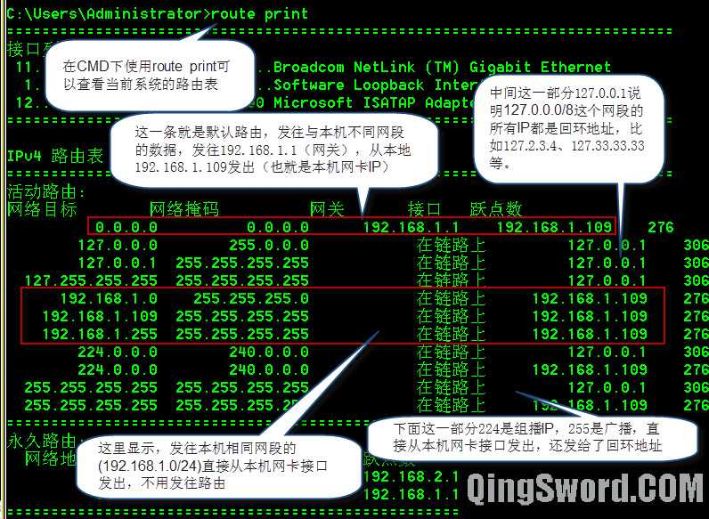
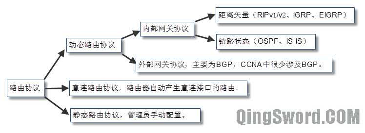
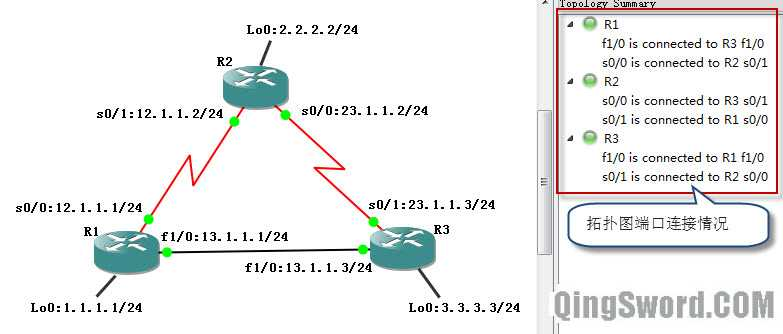
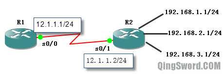

[CCNA图文笔记]-9-静态路由与默认路由
引言
这篇文章介绍路由器互连的网络和交换机互连的网络的区别；分别介绍什么是直连路由，什么是静态路由，什么是动态路由，什么是默认路由；网络互连中路由选路的基本原则；最后结合一个实例讲解这些路由的工作原理。
文章目录
0×1.交换机互连与路由器互连的区别
a.交换机互连网络
交换机工作在OSI参考模型的第二层，完成数据帧（Frame）的转发，帧中的地址为MAC地址，交换机可以将多个相同类型的网络（拥有相似的帧结构）互连起来，但是对于帧结构不同的网络无能为力。
交换机存在以下几点不足：
1）广播风暴。当网络的规模较大时，可能引起广播风暴，网络中广播信息量巨大，导致网络拥塞，或瘫痪；
2）不同网段互连。普通的二层交换机无法满足不同网段间的通信；
3）网络安全。无法进行不同网段间互相通信，就意味着，需要通信时，要将不同网段合并成一个，这增加了安全风险；
b.路由器互连网络
路由器工作在OSI参考模型的第三层网络层，利用网络层定义的"逻辑地址"（IP地址）来区别不同网络，它不转发广播消息，并将广播消息限制在每个网络内部；发往其他网段的数据根据路由表转发。
目前在Internet网络中采用子网掩码来确定IP地址中的网络号和主机号；并规定，子网掩码（二进制形式）中数字"1"对应的IP地址中的部分为网络号，子网掩码中数字"0"所对应的IP地址中的部分为主机号，相同网络号的主机可以直接通信，不同网络号的主机需要通过网络中某个路由（网关）使他们能够通信。
路由上不同端口对应不同IP子网，不同端口的网络号必须不同。
0×2.路由原理
路由器的工作就是接收信息分组，根据路由表将分组发送出去，这是路由器的两个基本功能，寻址和转发。
路由器也被称作转存设备，因为它在内存中储存接收到的信息分组，直到它被传送出去；路由的转发是基于目标的网络地址的，而不是目标的IP地址。
当一台主机将信息发送给处于同一子网的另外一台主机时（它们也许是连接在同一台交换机上），不需要经过路由器，只需要交换机中转数据；但是，如果这台主机想要给不同子网的一台主机发信息，就必须通过路由器中转数据，而一般主机商都配置有默认网关（default gateway），这个默认网关就是出口路由连接这个网段的接口的IP地址。
下图是Windows系统配置了默认网关(192.168.1.1)后的路由表：
Ps：在这里不得不说一下，Windows系统根据自身路由表转发数据，如果存在一个恶意进程，直接使用下面的命令删除了默认路由，效果就是发往其他网段的数据全部丢弃，也就是上不了网了；
/*执行后查看route print可以看到默认路由消失了，并且在本地网卡里面的默认路由设置也被清空了*/ C:\Users\Administrator>route delete 0.0.0.0 操作完成!
不仅仅操作系统中存在默认路由这个概念，路由器本身也有默认路由，路由器将不知道往哪发的IP分组发给默认路由。
0×3.路由协议
路由协议分类如下图所示：
注：EIGRP是一个高级距离矢量协议，同时具有距离矢量和链路状态路由协议的特征，Cisco私有协议之一。
下面通过一个实例来演示直连路由协议、静态路由协议以及默认路由，实验在GNS3中进行，使用的路由IOS为c3640，设备连接以及IP分配如下图所示，R1、R2、R3互相连接，他们上面分别开启了一个回环接口，注意R1和R3之间使用了以太网接口：
a.直连路由
三台路由相同的配置部分：
Router>en Router#conf t Router(config)#host R1 /*请根据不同路由设置名称*/ /*关闭CDP协议，不然R1和R3的以太网接口会一直出现双工不匹配的提示，以后的实验，只要涉及到以太网接口，就关闭CDP*/ R1(config)#no cdp run R1(config)#line co 0 R1(config-line)#logg syn R1(config-line)#exec-t 0 0 R1(config-line)#exit
R1配置:
R1(config)#int s 0/0 R1(config-if)#ip add 12.1.1.1 255.255.255.0 R1(config-if)#no shut R1(config-if)#int fa 1/0 R1(config-if)#ip add 13.1.1.1 255.255.255.0 R1(config-if)#no shut R1(config-if)#int lo 0 R1(config-if)#ip add 1.1.1.1 255.255.255.0 R1(config-if)#no shut /*配置了一个没有连线的接口，并且开启它，后面会讲到*/ R1(config-if)#int s0/3 R1(config-if)#ip add 8.8.8.8 255.255.255.0 R1(config-if)#no shut R1(config-if)#end R1#
R2配置:
R2(config)#int s 0/1 R2(config-if)#ip add 12.1.1.2 255.255.255.0 R2(config-if)#no shut R2(config-if)#int s 0/0 R2(config-if)#ip add 23.1.1.2 255.255.255.0 R2(config-if)#no shut R2(config-if)#int lo 0 R2(config-if)#ip add 2.2.2.2 255.255.255.0 R2(config-if)#no shut R2(config-if)#end R2#
R3配置:
R3(config)#int s 0/1 R3(config-if)#ip add 23.1.1.3 255.255.255.0 R3(config-if)#no shut R3(config-if)#int fa 1/0 R3(config-if)#ip add 13.1.1.3 255.255.255.0 R3(config-if)#no shut R3(config-if)#int lo 0 R3(config-if)#ip add 3.3.3.3 255.255.255.0 R3(config-if)#no shut R3(config-if)#end R3#
配置完成后，在R1上查看当前路由表：
R1#show ip route 1.0.0.0/24 is subnetted, 1 subnets C 1.1.1.0 is directly connected, Loopback0 12.0.0.0/24 is subnetted, 1 subnets C 12.1.1.0 is directly connected, Serial0/0 13.0.0.0/24 is subnetted, 1 subnets C 13.1.1.0 is directly connected, FastEthernet1/0 /* * 我们看到，R1的路由表中有3个条目，分别代表了三个不同网段 * 前面的“C”表示直连路由，但是为什么没有出现s0/3(8.8.8.8)这个路由条目呢？ * 这是因为，路由只会产生激活端口的直连路由， * 虽然s0/3配置了IP并且开启了，但是它并没有连线， * 就算连线，如果对端端口没有加电开启，这个接口的IP任然是无效的，不会显示出来。 * Loopback接口是虚拟接口，只要配置IP，默认就是打开并且显示的。 */
下面是R2和R3的路由表：
/*显示R2路由表*/ R2#show ip route 2.0.0.0/24 is subnetted, 1 subnets C 2.2.2.0 is directly connected, Loopback0 23.0.0.0/24 is subnetted, 1 subnets C 23.1.1.0 is directly connected, Serial0/0 12.0.0.0/24 is subnetted, 1 subnets C 12.1.1.0 is directly connected, Serial0/1 /*显示R3路由表*/ R3#show ip route 3.0.0.0/24 is subnetted, 1 subnets C 3.3.3.0 is directly connected, Loopback0 23.0.0.0/24 is subnetted, 1 subnets C 23.1.1.0 is directly connected, Serial0/1 13.0.0.0/24 is subnetted, 1 subnets C 13.1.1.0 is directly connected, FastEthernet1/0
测试网络连通性：
/*在R1上测试Ping所有直连路由接口，全部成功*/ R1#ping 12.1.1.2 !!!!! /*成功*/ R1#ping 13.1.1.3 .!!!! /*成功*/ /*但是ping非直连的接口IP，失败*/ R1#ping 2.2.2.2 ..... /*失败*/ /*在R1、R2、R3上均可以ping通直连接口，但是非直连接口全部ping失败*/
为什么所有直连能够ping通，但是非直连IP全部ping失败呢？这要从路由器中数据的流动来分析，当路由器从局域网中收到一个帧时，在进入RAM之前，首先检查它的二层帧头，如果是发往本路由，则去掉二层帧头；在RAM里，路由检测第三层报头信息，同时搜索路由表匹配包头信息中的地址应该怎么转发。
当R1上ping 12.1.1.2时，R1检查自己的路由表，发现有一条匹配的直连路由告诉它，应该将数据从s0/0发出(12.1.1.0 is directly connected, Serial0/0)，R1和R2之间是串行点对点线路，R2收到这个ping（Echo request）包后，知道是12.1.1.1发来的，同时查询自己的路由表，也找到了直连的路由条目，所以它将ping的应答包从自己的s0/1接口发回去，这样R1 ping R2成功。
而当R1 ping 2.2.2.2时，R1查询自己的路由表，发现里面根本没有去往2.2.2.2的路由条目，所以R1丢弃ping包，ping失败。
b.静态路由
可以通过手动添加静态路由的方法让R1、R2、R3相互之间能够ping通非直连网段；分别在R1、R2、R3上添加下面的静态路由条目：
/* * 静态路由添加命令格式： * ip route 目标网络 子网掩码 下一跳路由器直连接口IP或本路由外出接口 administrative_distance permanent * administrative_distance是管理距离（可选） * permanent是一个关键字参数，如果添加这个关键字参数， * 代表路由器接口关闭或者下一跳路由丢失时，这个静态路由条目也不会消失。 */ /*第一种方法，使用下一跳路由直连接口IP作为静态路由目的地址*/ /* * R1配置静态路由， * 去往2.2.2.0/24网段的数据发往12.1.1.2 * 去往3.3.3.0/24的数据发往13.1.1.3 * 去往23.1.1.0/24的数据也发往13.1.1.3 */ R1(config)#ip route 2.2.2.0 255.255.255.0 12.1.1.2 R1(config)#ip route 3.3.3.0 255.255.255.0 13.1.1.3 R1(config)#ip route 23.1.1.0 255.255.255.0 13.1.1.3 /*R2配置静态路由*/ R2(config)#ip route 1.1.1.0 255.255.255.0 12.1.1.1 R2(config)#ip route 13.1.1.0 255.255.255.0 12.1.1.1 R2(config)#ip route 3.3.3.0 255.255.255.0 23.1.1.3 /*R3配置静态路由*/ R3(config)#ip route 1.1.1.0 255.255.255.0 13.1.1.1 R3(config)#ip route 12.1.1.0 255.255.255.0 12.1.1.1 R3(config)#ip route 2.2.2.0 255.255.255.0 23.1.1.2 /*这样配置完后，任何一台路由上都能ping通网络中的任意端口IP*/ /*第二种方法，使用本地路由外出接口*/ R1(config)#ip route 2.2.2.0 255.255.255.0 s0/0 R1(config)#ip route 3.3.3.0 255.255.255.0 fa1/0 R1(config)#ip route 23.1.1.0 255.255.255.0 fa1/0 R2(config)#ip route 1.1.1.0 255.255.255.0 s0/1 R2(config)#ip route 13.1.1.0 255.255.255.0 s0/1 R2(config)#ip route 3.3.3.0 255.255.255.0 s0/0 R3(config)#ip route 1.1.1.0 255.255.255.0 fa1/0 R3(config)#ip route 12.1.1.0 255.255.255.0 fa1/0 R3(config)#ip route 2.2.2.0 255.255.255.0 s0/1 /*这样配置后全网也能互相通信，只是稍微有一点不一样，R1和R3是使用以太网端口相连的，以太网不同于点对点端口，以太网的封装是需要MAC地址的，在通信前需要先ARP获取目的MAC地址才能封装帧，下面解释以太网使用外出接口会遇到什么问题*/
* 在静态路由设置中，接口是多路访问网络（以太网或帧中继等）使用"本路由外出接口"能够ping通目标的条件：
条件一：ARP请求的源IP和路由接口IP在同一个子网中；
条件二：路由器有ARP请求的IP地址的路由；
在上面的例子第二个方法中，现在假设R1 ping R3的3.3.3.3，根据R1的路由表，R1知道这个ICMP包要从fa1/0接口发出，而fa1/0是以太网接口，所以R1首先发送一个ARP查询包，询问3.3.3.3的MAC地址，R3从自己的fa1/0接口接收到这个ARP查询，R3发现，自己这个接口默认开启了ARP proxy（Cisco路由接口默认是开启的），而且ARP请求的源地址（13.1.1.1）与R3接收到的ARP请求的接口IP（13.1.1.3）处于同一个子网（13.1.1.0/24），并且R3上面有3.3.3.0/24的路由（因为是R3的直连路由），这样就满足了代理ARP执行的这两个条件，R3使用自己fa1/0接口的MAC封装ARP应答包发回给R1，R1接到这个应答包后，直接封装ICMP包，发送给R3，R3收到这个ICMP包后，发现目的MAC是自己的MAC，目的IP是本路由的直连IP，然后应答这个ICMP包，ping成功了。
* 在静态路由设置中，使用"下一跳路由器与本路由直连接口的IP"和使用"本路由外出接口"的区别：
区别一：使用下一跳路由器和本路由器相连的IP地址，默认的管理距离是1；使用本路由外出接口，管理距离默认是0；
区别二：下一跳使用本路由外出接口，这种用法仅能使用在点对点线路上（PPP或HDLC）；如果是以太网或帧中继网络，建议指定下一跳路由器与本路由直连接口的IP地址；
我们来做一个实验就能明白为什么必须开启ARP proxy，使用上面的第二种方法添加静态路由，然后在R3的fa1/0接口上关闭ARP proxy。清空R1 ARP缓存，再用R1去ping 3.3.3.3以及23.1.1.3和23.1.1.2,就会发现ping不通了；开启R3的ARP代理，立刻就能ping通这三个地址了：
/*可以使用no ip route删除已经存在的静态路由，然后重新配置使用外出接口的静态路由*/ R1#conf t R1(config)#no ip route 3.3.3.0 255.255.255.0 R1(config)#no ip route 23.1.1.0 255.255.255.0 R1(config)#ip route 3.3.3.0 255.255.255.0 fa1/0 R1(config)#ip route 23.1.1.0 255.255.255.0 fa 1/0 R1(config)#end /*现在R1的路由表中去往R3的3.3.3.0/24以及23.1.1.0/24都是直接指定的R1自己的外出接口*/ R1#show ip route 1.0.0.0/24 is subnetted, 1 subnets C 1.1.1.0 is directly connected, Loopback0 2.0.0.0/24 is subnetted, 1 subnets S 2.2.2.0 [1/0] via 12.1.1.2 3.0.0.0/24 is subnetted, 1 subnets S 3.3.3.0 is directly connected, FastEthernet1/0 23.0.0.0/24 is subnetted, 1 subnets S 23.1.1.0 is directly connected, FastEthernet1/0 12.0.0.0/24 is subnetted, 1 subnets C 12.1.1.0 is directly connected, Serial0/0 13.0.0.0/24 is subnetted, 1 subnets C 13.1.1.0 is directly connected, FastEthernet1/0 /*在使用外出接口添加静态路由条目后，使用R1分别ping一下R3全部接口以及R2和R3直连的串口，之后，R1的ARP缓存如下*/ R1#show arp Protocol Address Age (min) Hardware Addr Type Interface Internet 3.3.3.3 0 cc02.0ab4.0010 ARPA FastEthernet1/0 Internet 13.1.1.1 - cc00.0ab4.0010 ARPA FastEthernet1/0 Internet 13.1.1.3 83 cc02.0ab4.0010 ARPA FastEthernet1/0 Internet 23.1.1.3 0 cc02.0ab4.0010 ARPA FastEthernet1/0 Internet 23.1.1.2 0 cc02.0ab4.0010 ARPA FastEthernet1/0 /*关闭R3 fa1/0接口的ARP代理功能*/ R3(config)#int fa 1/0 R3(config-if)#no ip proxy-arp /*清空R1 ARP缓存*/ R1#clear arp /*此时再去ping 3.3.3.3以及任何23.1.1.0/24网段IP，都ping不通了，原因上面已经分析过了*/
c.静态路由总汇
在R2上面有三个回环接口，IP如下图所示，如果使用静态路由配置，在R1上需要设置三条静态路由分别指向这三个回环接口，但为了减小路由表大小，可以使用一条路由汇总来代替：
/*不使用汇总，需要在R1上添加三条静态路由*/ R1(config)#ip route 192.168.1.0 255.255.255.0 12.1.1.2 R1(config)#ip route 192.168.2.0 255.255.255.0 12.1.1.2 R1(config)#ip route 192.168.3.0 255.255.255.0 12.1.1.2 /*使用静态路由汇总，只需要一条静态路由*/ R1(config)#ip route 192.168.0.0 255.255.252.0 12.1.1.2
关于路由汇总的基础知识在[[CCNA图文笔记]-4-IP地址详解]第二节实例四中已经介绍过，这里不再赘述。
d.默认路由
使用no ip route命令删除R1、R2、R3上面的所有静态路由条目，使用默认路由代替它们：
/*R1 删除静态路由，使用默认路由，所有未知数据包发往12.1.1.2*/ R1(config)#no ip route 2.2.2.0 255.255.255.0 R1(config)#no ip route 3.3.3.0 255.255.255.0 R1(config)#no ip route 23.1.1.0 255.255.255.0 R1(config)#ip route 0.0.0.0 0.0.0.0 12.1.1.2 /*R2 所有未知数据包发往23.1.1.3*/ R2(config)#no ip route 1.1.1.0 255.255.255.0 12.1.1.1 R2(config)#no ip route 3.3.3.0 255.255.255.0 23.1.1.3 R2(config)#no ip route 13.1.1.0 255.255.255.0 23.1.1.3 R2(config)#ip route 0.0.0.0 0.0.0.0 23.1.1.3 /*R3 所有未知数据包发往13.1.1.1*/ R3(config)#no ip route 1.1.1.0 255.255.255.0 13.1.1.1 R3(config)#no ip route 2.2.2.0 255.255.255.0 23.1.1.2 R3(config)#no ip route 12.1.1.0 255.255.255.0 12.1.1.1 R3(config)#ip route 0.0.0.0 0.0.0.0 13.1.1.1 /* * 配置完成默认路由后全网均能够互相通信， * 实际上这种默认路由的设置最容易形成路由环路， * 如果数据目的地址在这个网络中不存在， * R1将未知数据发往R2、而R2又发往R3、R3再发给R1，环路形成。 */ /* * 可以使用traceroute来测试路由环路,traceroute一个不存在的IP地址， * 可以看到，下面的实验结果，数据在重复的被R1-R2-R3循环传送， * 因为Traceroute只追踪到TTL=30，所以到30跳就停止了。 * 那么如果换成ping会不会一直循环下去呢？ * 答案是，不会，因为网络层有一个TTL字段，最大255， * 每经过一个路由TTL减一，直到TTL等于0，数据被丢弃。 */ R1#traceroute 6.6.6.6 1 12.1.1.2 72 msec 104 msec 32 msec 2 23.1.1.3 76 msec 92 msec 68 msec 3 13.1.1.1 72 msec 72 msec 80 msec 4 12.1.1.2 92 msec 128 msec 88 msec 5 23.1.1.3 112 msec 212 msec 80 msec ........ 30 13.1.1.1 73 msec 71 msec 112 msec
下面用高级ping命令来看看数据是走的什么路径达到的目的地：
/*下面没有输入值的全部默认回车*/ R1#ping /*使用默认IP协议，直接回车*/ Protocol [ip]: /*目的IP是R3上的回环接口*/ Target IP address: 3.3.3.3 Repeat count [5]: 1 /*ping一次*/ Datagram size [100]: Timeout in seconds [2]: Extended commands [n]: y /*用本地的1.1.1.1接口去ping*/ Source address or interface: 1.1.1.1 Type of service [0]: Set DF bit in IP header? [no]: Validate reply data? [no]: Data pattern [0xABCD]: /*记录每一台设备发起的IP地址，输入r，后面全部默认回车*/ Loose, Strict, Record, Timestamp, Verbose[none]: r Number of hops [ 9 ]: Loose, Strict, Record, Timestamp, Verbose[RV]: Sweep range of sizes [n]: Reply to request 0 (56 ms). Received packet has options Total option bytes= 40, padded length=40 Record route: (12.1.1.1) /*数据首先从本地s0/0发出*/ (23.1.1.2) /*再从R2的s0/1发出*/ (3.3.3.3) /*到达R3的回环接口*/ (13.1.1.3) /*R3再从fa1/0发回*/ (1.1.1.1) <*> /*回到R1*/ (0.0.0.0) (0.0.0.0) (0.0.0.0) (0.0.0.0) End of list
Ps：不知道大家发现了没有traceroute命令记录的是数据流动方向，接收设备接收这个数据时的接收接口IP；而ping命令记录的是数据流动方向上，发送设备发送这个数据时的发送接口IP。